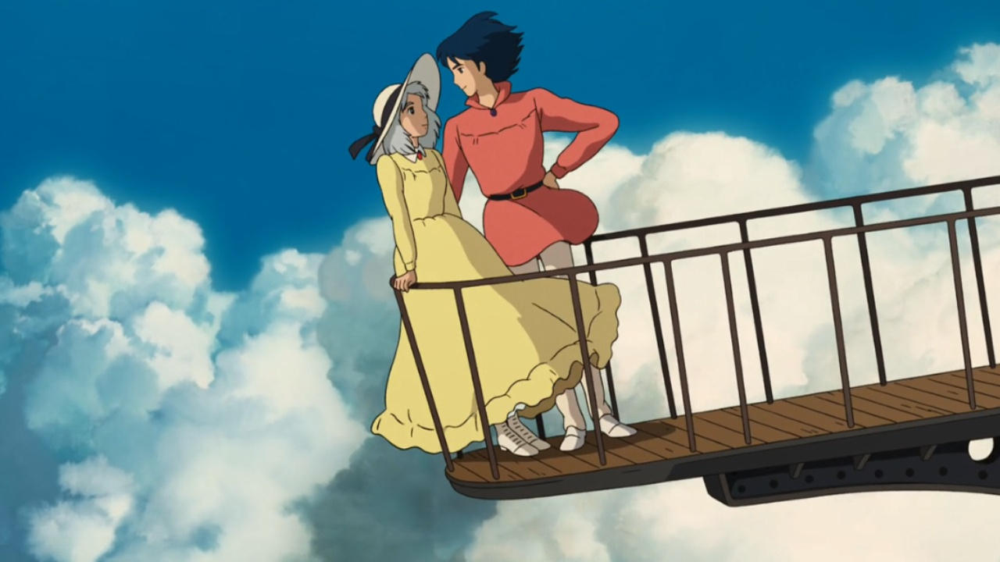
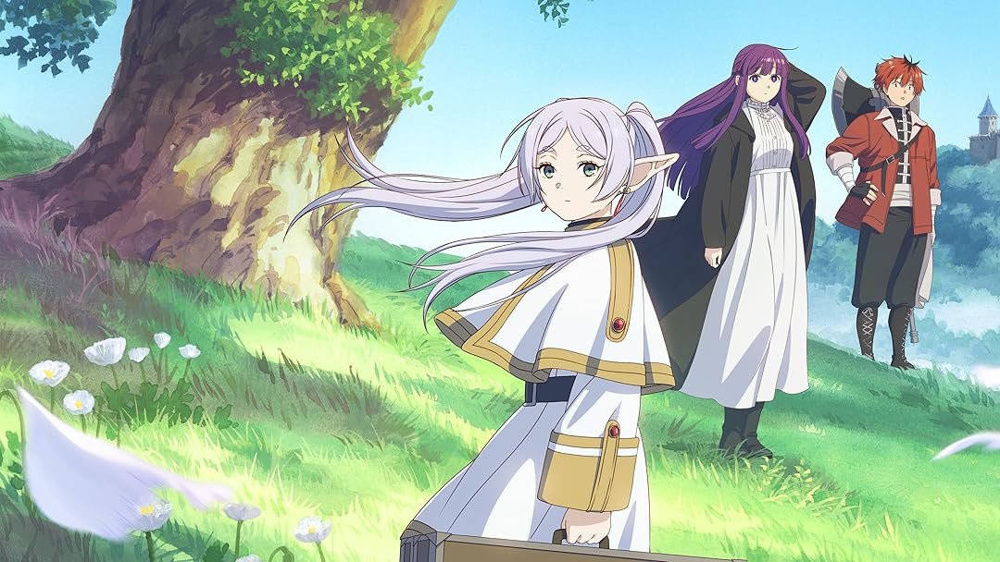
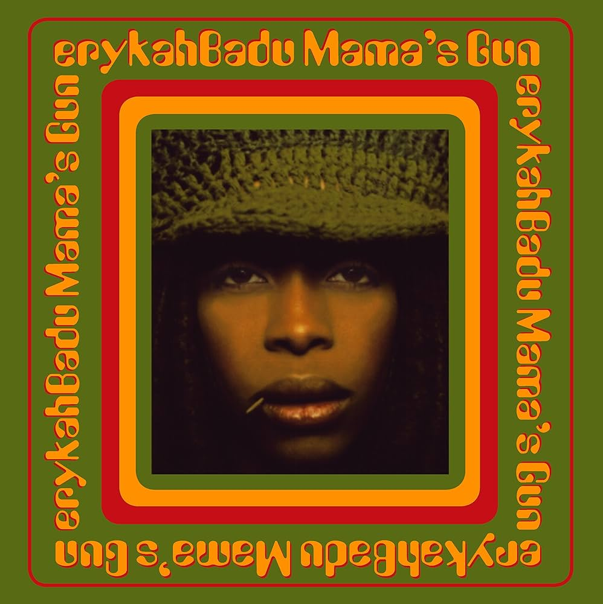
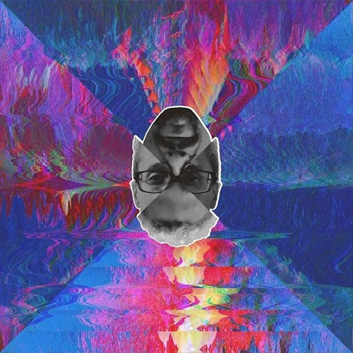
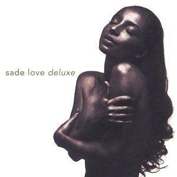
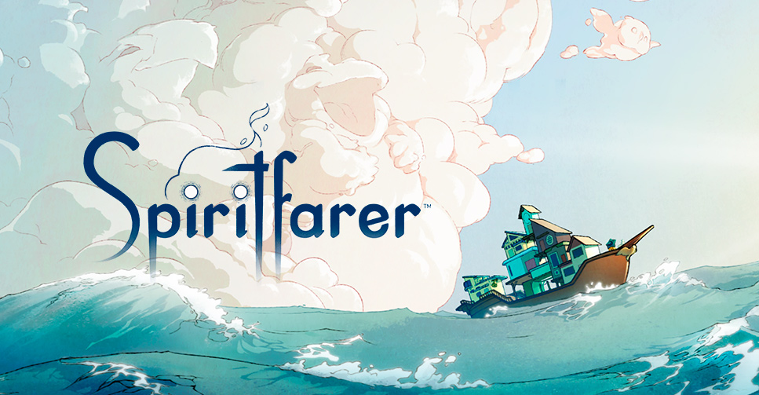
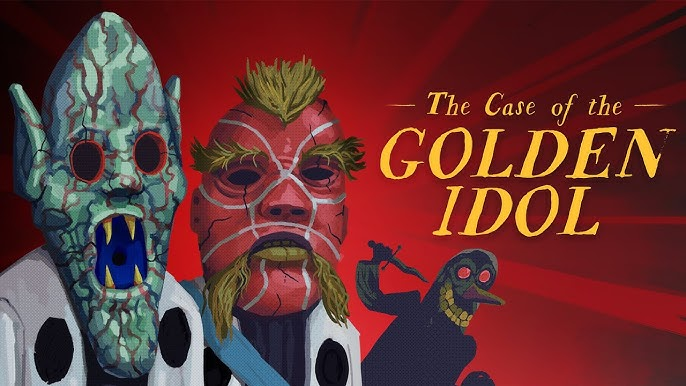

Filmes e Séries


Filmes e séries são minha principal fonte de entretenimento, sendo meus genêros favoritos comédia, drama e animação. Gosto de assistir filmes, séries e animações japonesas.
Meus filmes favoritos são Castelo Animado e Swing Girls, ambas produções japonesas. Minha série favorita no momento é Frieren.
Música e Podcasts



Embora seja uma pessoa eclética se tratando de música, meus genêros favoritos são R&B, Soul e HipHop.
Meus albums favoritos de todos os tempos são: Mama's Gun da cantora Erykah Badu; o albúm de rap Abaixo de Zero: Hello Hell de Black Alien, lançado em 2019; Love Delux da cantora Sade, lançado em 1992, um album de muito sucesso do sub-gênero Trip Hop.
Games e Tecnologia



Embora não tenha o hábito de diário de jogar video game, tenho uma longa lista de jogos que já joguei e gosto muito. Meus genêros de jogos favoritos são coxy game, jogos de contrução e puzzles.
Meus jogos favoritos são Stardew Valley, Spiritfarer e The Case of the Golden Idol.